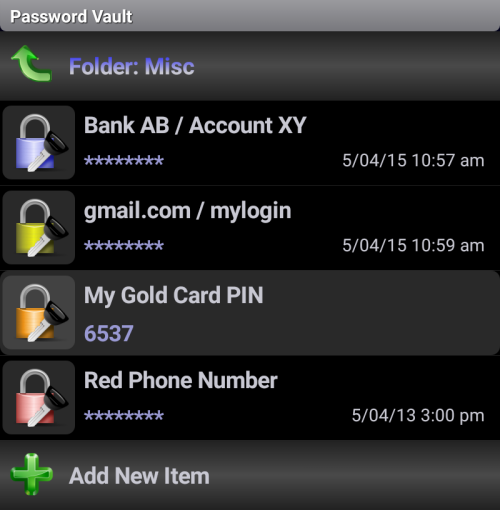

(нажмите на букву или пролистайте вниз для просмотра разделов)
A - Папки паролей
Короткое нажатие на папке открывает ваш список паролей:

Короткое нажатие на элементе: Показать/Скрыть пароль
Долгое нажатие на элементе: Показать/Редактировать параметры (заголовок, пароль, заметки и цвет), Удалить/Переместить элемент
Значение значков:
- Копировать в буфер обмена
- Копироваь в буфер обмена (Все/Выбранный абзац - конец абзаца с помощью клавиши Enter)
- Генератор паролей
Долгое нажатие на папке: Показать/Редактировать/Удалить параметры папки (имя, заметка и цвет)
Привязка позиции (Верхний правый угол): (ABC...) означает алфавитный порядок (по умолчанию) - номера обозначают абсолютную позицию редактируемой папки (примечание: Если вы выберите уже существующую позицию, оригинальная папка будет заменена на редактируемую, а позиция оригинальной будет автоматически установлена на значение по умолчанию (по алфавиту).)
B - Кнопка Еще
примечание: нижмите кнопку "Меню" или "Расширить" (нижний правый угол) для отображения нижнего меню
Изменить пароль: изменяет "мастер" пароль для Сейфа паролей
Импортировать сейф: импортирует данные предварительно экспортированного Сейфа паролей из папки Импорта/Экспорта
Объединить Сейфы: объединить сейфы
Экспортировать сейф: экспортирует (резервирует) текущие данные Сейфа паролей в папку Импорта/Экспорта